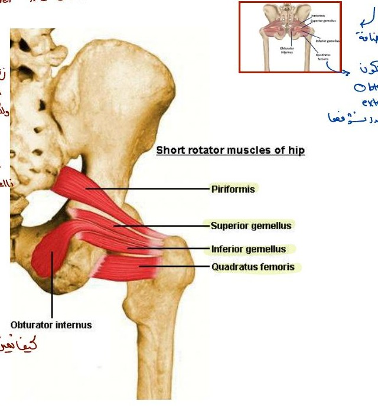
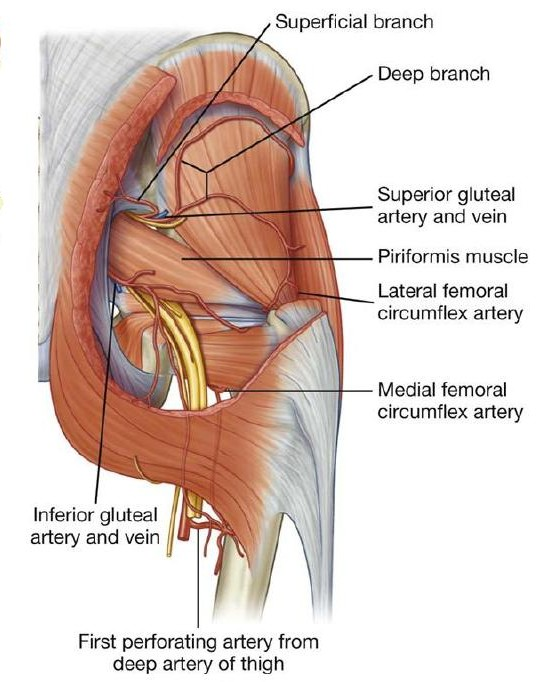
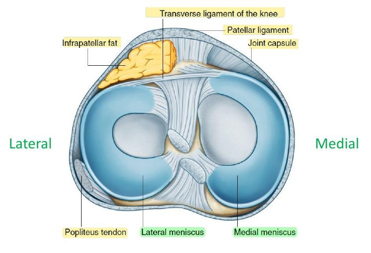
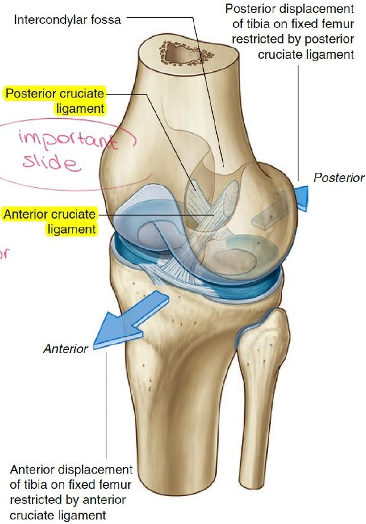

How to use this page
Part A
Gluteal region and thigh (slides by Dr. Dima Hamarsheh): skin, fascia, muscles, foramina, vessels, lymph nodes, compartments.Part B
Knee joint (slides by Dr. Refat AboGhazleh): bones, menisci, capsule, bursae, ligaments, movements, injuries.Practice
32 MCQs (multiple-choice questions) with explanations, answer reveal, flagging, filters and progress tracking.Tag Added marks standard textbook detail that is not on the slides but resolves an ambiguity. Progress in the MCQ section is kept only while the page is open.
Gluteal region
The gluteal region (Greek gloutos, buttock) is the transitional region between the trunk and the free lower limb.
1. Skin: cutaneous innervation by quadrant
The buttock is divided into 4 quadrants by a vertical and a horizontal line; each has its own nerve supply. (L = lumbar, S = sacral, T = thoracic spinal levels.)
| Quadrant | Rami | Nerve source |
|---|---|---|
| Upper lateral | Anterior primary rami | Lateral cutaneous branch of the iliohypogastric nerve (L1) and lateral cutaneous branch of the subcostal nerve (T12). Contains the safe injection region. |
| Upper medial | Posterior primary rami | L1–L3 and S1–S3 (the superior and middle cluneal nerves Added). |
| Lower lateral | Anterior primary rami | Branches from the lateral cutaneous nerve of the thigh. |
| Lower medial | Anterior primary rami | Branches from the posterior cutaneous nerve of the thigh. |
2. Fascia
Iliotibial tract (ITT): thickening of the fascia lata on the lateral thigh. Above: tubercle of the iliac crest (iliac tubercle). Below: lateral condyle of the tibia (anterolateral or Gerdy’s tubercle). Receives the insertion of tensor fasciae latae (TFL) and gluteus maximus.
3. Muscles

- Piriformis
- Obturator internus tendon and gemelli
- Quadratus femoris
| Muscle | Origin | Insertion | Action | Nerve |
|---|---|---|---|---|
| Gluteus maximus (outermost) | Ilium behind the posterior gluteal line; back of sacrum and coccyx; back of the sacrotuberous ligament | Superficial ¾ into ITT; deep lower ¼ into gluteal tuberosity of femur | Main extensor of hip; some lateral rotation; climbing stairs, cycling; braces extended knee via ITT | Inferior gluteal |
| Gluteus medius and minimus | Ilium | Greater trochanter of femur | Main abductors of hip; anterior fibres medially rotate; keep pelvis level when walking | Superior gluteal |
| Tensor fasciae latae (TFL) | Iliac crest (anterior part and anterior superior iliac spine, ASIS Added) | ITT | Assists gluteus maximus in extending (bracing) the knee through the ITT | Superior gluteal |
Short lateral rotators (under gluteus maximus)
Six muscles: piriformis, quadratus femoris, obturator internus, superior gemellus, obturator externus, inferior gemellus. Obturator internus lies between the two gemelli (its tendon is sandwiched). Piriformis is the key landmark: it almost fills the greater sciatic foramen. All are lateral rotators of the thigh at the hip.
Optional detail table (lecturer crossed out origin/insertion/nerve; action is what matters)
| Muscle | Origin | Insertion | Nerve (roots) |
|---|---|---|---|
| Piriformis | Anterior surface of sacrum | Upper border of greater trochanter | 1st and 2nd sacral nerves (L5, S1, S2) |
| Obturator internus | Inner surface of obturator membrane | Upper border of greater trochanter | Sacral plexus (L5, S1) |
| Superior gemellus | Spine of ischium | Upper border of greater trochanter | Sacral plexus (L5, S1) |
| Inferior gemellus | Ischial tuberosity | Upper border of greater trochanter | Sacral plexus (L5, S1) |
| Quadratus femoris | Lateral border of ischial tuberosity | Quadrate tubercle of femur | Sacral plexus (L5, S1) |
4. Structures under cover of gluteus maximus flagged important
- Greater trochanter and its bursa
- Gluteal tuberosity (deep part of gluteus maximus inserts here)
- Ischial tuberosity and its bursa
- Sacrotuberous ligament
- Sacrospinous ligament (spelt “Scrospinous” on the slide)
- Gluteus medius and minimus
- Six short lateral rotators
- Origin of the hamstrings (mostly from the ischial tuberosity)
- Superior gluteal vessels
- Inferior gluteal vessels
- Internal pudendal vessels
- Superior and inferior gluteal nerves
- Sciatic nerve
- Pudendal nerve
- Posterior cutaneous nerve of the thigh
- Nerve to obturator internus
- Nerve to quadratus femoris
5. Sciatic foramina flagged important

- Piriformis
- Superior gluteal artery and vein
- Inferior gluteal artery and vein
The sacrotuberous and sacrospinous ligaments convert the sciatic notches into the greater and lesser sciatic foramina Added.
| Opening | Relation | Structures |
|---|---|---|
| Greater sciatic foramen | Above piriformis | Superior gluteal nerve and vessels (only these) |
| Greater sciatic foramen | Below piriformis | Inferior gluteal nerve and vessels; sciatic nerve; posterior cutaneous nerve of thigh; nerve to quadratus femoris; pudendal nerve; internal pudendal vessels; nerve to obturator internus |
| Lesser sciatic foramen | — | Pudendal nerve; internal pudendal vessels; nerve to obturator internus |
6. Arteries
| Artery | Entry | Supply |
|---|---|---|
| Superior gluteal | Branch of internal iliac artery; enters via greater sciatic foramen above piriformis | Divides into superficial branch (gluteus maximus) and deep branch (gluteus medius and minimus) |
| Inferior gluteal | Branch of internal iliac artery; enters via greater sciatic foramen below piriformis | Numerous branches distributed throughout the gluteal region |
Thigh
1. Skin: cutaneous nerves by plexus
| Source | Nerves |
|---|---|
| Lumbar plexus | 1. Lateral cutaneous nerve of thigh · 2. Femoral branch of genitofemoral nerve · 3. Ilioinguinal nerve |
| Femoral nerve | 4. Medial cutaneous nerve of thigh · 5. Intermediate cutaneous nerve of thigh |
| Obturator nerve | 6. Cutaneous branch(es) to the medial thigh |
| Sacral plexus | 7. Posterior cutaneous nerve of thigh |
2. Superficial fascia contents
3. Superficial inguinal lymph nodes
Lie below the inguinal ligament in two groups.
| Group | Position | Drains |
|---|---|---|
| Horizontal, medial | Below and parallel to the inguinal ligament | Anterior abdominal wall below the umbilicus; perineum; urethra; external genitalia of both sexes (except the testes); lower half of anal canal; lower third of vagina |
| Horizontal, lateral | Below and parallel to the inguinal ligament | Back below the level of the iliac crests (includes the gluteal region) |
| Vertical | Along the terminal great saphenous vein | Most of the superficial lymph vessels of the lower limb |
Testes drain to para-aortic (lumbar) nodes, not inguinal nodes Added.
4. Deep fascia and compartments
The fascia lata is attached to the linea aspera by three intermuscular septa (medial, lateral, posterior). With the fascia they divide the thigh into three compartments.
| Compartment | Main muscles Added | Main nerve Added |
|---|---|---|
| Anterior | Quadriceps femoris, sartorius | Femoral |
| Medial | Adductors, gracilis | Obturator |
| Posterior | Hamstrings | Sciatic (tibial part) |
Knee joint
1. Bones and landmarks
| Bone | Features to identify |
|---|---|
| Femur | Body; adductor tubercle; medial and lateral epicondyles; medial and lateral condyles; patellar surface; intercondylar fossa (notch) |
| Patella | Base (top); apex (bottom); anterior surface |
| Tibia | Medial and lateral condyles (tibial plateau); intercondylar eminence (with medial and lateral tubercles); tibial tuberosity; shaft |
| Fibula | Head and shaft. Not part of the joint and not weight-bearing, but stabilises it (fibular collateral ligament and biceps femoris attach to the head) |
Articular surfaces are covered by hyaline cartilage. On X-ray, bone is opaque and cartilage is not seen, so the “black space” between femur and tibia is the cartilage; narrowing suggests osteoarthritis.
2. Type and articulations
| Articulation | Between | Type |
|---|---|---|
| Medial and lateral femorotibial (2) | Two femoral condyles and upper surfaces of two tibial condyles | Synovial, modified hinge |
| Femoropatellar (1) | Posterior surface of patella and patellar surface of femur | Synovial, plane |
3 bones, 3 articulations. The patella articulates only with the femur through the whole range of flexion. The knee as a whole is a modified hinge: flexion and extension plus a small amount of rotation (about 5°, used in locking and unlocking). By contrast, the elbow is a true hinge with no rotation.
3. Menisci flagged important

- Lateral meniscus
- Medial meniscus
Two C-shaped plates of fibrocartilage on the tibial condyles, attached by anterior and posterior horns to the intercondylar area of the tibia. The anterior horns are joined by the transverse ligament of the knee. Functions: deepen the articular surfaces, absorb shock, and help stabilise the joint.
| Feature | Lateral meniscus | Medial meniscus |
|---|---|---|
| Size | Small | Large (the medial condyles are larger) |
| Shape | Circular | Oval (more open C) |
| Outer border | Separated from the fibular collateral ligament by the popliteus tendon | Attached to the capsule and tibial collateral ligament |
| Mobility | More mobile | Less mobile (fixed) |
| Liability to injury | Less liable | More liable |
4. Joint capsule and synovial membrane
- Deficient anteriorly: replaced by quadriceps femoris tendon, patella and patellar ligament.
- Opening posteriorly for the popliteus tendon.
- Lines the capsule and attaches to the margins of the articular surfaces and the peripheral edges of the menisci.
- Reflects into the intercondylar region, covering the cruciate ligaments and infrapatellar fat pad, so they are inside the capsule but outside the articular cavity.
- Posteriorly it reflects off the capsule on either side of the PCL and loops forward round both cruciates.
- Anteriorly: alar folds on each side of the fat pad, and a midline infrapatellar synovial fold attached to the intercondylar fossa of the femur.
Synovial cavity communicates with: suprapatellar bursa, popliteus bursa (subpopliteal recess), semimembranosus bursa, gastrocnemius bursa.
5. Bursae
| Bursa | Location |
|---|---|
| Suprapatellar | Between femur and quadriceps femoris tendon (communicates with the joint) |
| Subcutaneous prepatellar | Between patella and skin: housemaid’s knee |
| Subcutaneous infrapatellar | Between tibial tuberosity and skin |
| Deep infrapatellar | Between tibia and patellar ligament |
| Popliteus | Between popliteus tendon and lateral condyle of tibia |
| Anserine | Under the pes anserinus, over the tibial collateral ligament |
6. Ligaments flagged important

- Anterior cruciate ligament
- Posterior cruciate ligament
Extracapsular (4)
| Ligament | Attachments and notes |
|---|---|
| Patellar | Patella to tibial tuberosity (continuation of the quadriceps tendon) |
| Medial (tibial) collateral, MCL | Medial epicondyle of femur to upper part of medial surface of tibia. Deep fibres firmly attached to the medial meniscus. |
| Lateral (fibular) collateral, LCL | Lateral epicondyle of femur to head of fibula. A strong cord separated from the lateral meniscus by the popliteus tendon; deep fibres not attached to the meniscus. |
| Oblique popliteal | Expansion of the semimembranosus tendon, strengthening the back of the capsule |
Intracapsular: cruciate ligaments (ACL, PCL)
Two, in the middle of the joint, crossing each other (“cruciate”). Named anterior or posterior by their tibial attachment. They hold femur and tibia together and stabilise the joint.
| Anterior cruciate (ACL) | Posterior cruciate (PCL) | |
|---|---|---|
| Tibial attachment | Anterior intercondylar area | Posterior intercondylar area |
| Femoral attachment | Posterior part of medial surface of the lateral condyle | Anterior part of lateral surface of the medial condyle |
| Prevents | Anterior displacement of tibia on fixed femur | Posterior displacement of tibia on fixed femur |
| Strength | Weaker (more often injured) | Stronger |
| Test | Anterior drawer: supine, knee flexed, pull tibia forward | Posterior drawer: push tibia backward |
7. Stabilisation of the knee by region
| Region | Stabilisers |
|---|---|
| Anterior (extension) | Extensor (patellar) retinacula: aponeurotic expansions of vastus lateralis and vastus medialis, attached to the sides of quadriceps tendon, patella and patellar ligament, blending laterally with the ITT and medially with the MCL region |
| Posterior (extension) | Arcuate popliteal ligament: Y-shaped, from the head of the fibula; one limb arches over popliteus to the intercondylar area of the tibia, the other goes to the lateral femoral epicondyle. Oblique popliteal ligament (from semimembranosus). |
| Medial | MCL (attached to the medial meniscus). Superficial to it, the pes anserinus (goose foot): common insertion of Sartorius, Gracilis, SemiTendinosus (SGT), listed from anterior to posterior. |
| Lateral | LCL, biceps femoris tendon, ITT, popliteus tendon |
8. Movements and muscles
| Movement | Muscles |
|---|---|
| Flexion | Mainly hamstrings (biceps femoris, semitendinosus, semimembranosus); assisted by sartorius, gracilis, popliteus |
| Extension | Quadriceps femoris |
| Active medial rotation (knee flexed) | Semitendinosus and semimembranosus; assisted by sartorius and gracilis |
| Active lateral rotation (knee flexed) | Biceps femoris |
Active rotation is possible only when the knee is flexed; the extended knee cannot be rotated.
9. Locking and unlocking lecturer: important
- At the end of extension the femoral condyles rotate medially on the tibial plateau (the medial condyle is larger, so it travels further).
- All ligaments become tight; the knee is rigid for standing.
- Popliteus contracts and rotates the femur laterally about 5° on the tibia.
- This slackens the ligaments so flexion can start.
10. Nerve and blood supply
Clinical correlations
Intramuscular injection
The thickness of gluteus maximus makes it seem ideal, but to avoid the sciatic nerve the injection goes well forward in the upper outer quadrant. This area is mostly gluteus medius, so the drug is injected into gluteus medius rather than maximus.Superior gluteal nerve injury
Weak gluteus medius and minimus: during walking the pelvis tilts toward the unsupported side (Trendelenburg sign Added).Inferior gluteal nerve injury
Weak gluteus maximus: difficulty with stairs and rising from sitting Added.ACL injury
Partial, complete or avulsion tear. Anterior drawer test: patient supine, knee flexed, examiner pulls the tibia forward. Excess forward movement = positive.PCL injury
Excess posterior movement of the tibia (posterior drawer); visible as a discontinuity of the PCL on MRI (magnetic resonance imaging).Meniscus tear
Usually after a sudden twisting injury. Joint-line pain; the knee “gives way” when flexed or extended. On MRI the normal meniscus is dark; a tear shows a bright (fluid) line. Types: longitudinal (can become bucket-handle), radial (parrot beak), horizontal (flap).MCL rupture
Often accompanied by a medial meniscus tear because they are attached. The classic “unhappy triad” adds the ACL Added.Housemaid’s knee
Subcutaneous prepatellar bursitis from repeated kneeling. Repetitive trauma and small punctures can cause septic bursitis (may be mistaken for arthritis); incision and drainage are often needed.High-yield summary
Gluteal region
- Max = inferior gluteal; medius, minimus, TFL = superior gluteal.
- Max inserts ¾ ITT, ¼ gluteal tuberosity.
- Medius and minimus = main abductors; keep pelvis level.
- Only superior gluteal nerve and vessels pass above piriformis.
- Lesser foramen = PIN.
- Injection site: upper outer quadrant (gluteus medius).
Thigh
- Fascia lata → ITT laterally (iliac tubercle → lateral tibial condyle).
- 3 septa, 3 compartments: anterior, medial, posterior.
- Lateral horizontal nodes = buttock; medial horizontal = perineum and below umbilicus; vertical = lower limb.
- Testes do not drain to inguinal nodes.
Knee: structure
- 3 bones, 3 articulations; modified hinge; patella meets femur only.
- Medial meniscus: large, fixed, more injured.
- Cruciates are intracapsular but extrasynovial.
- MCL fused to medial meniscus; LCL is not.
- Pes anserinus = SGT, superficial to MCL.
Knee: function
- ACL stops tibia sliding forward; PCL stops it sliding back.
- Flexion = hamstrings; extension = quadriceps.
- Medial rotation: semitendinosus and semimembranosus; lateral: biceps femoris (knee flexed only).
- Locking = medial rotation of femur; unlocking = popliteus.
| Comparison | First | Second |
|---|---|---|
| ACL vs PCL | Anterior tibia → lateral condyle; stops forward tibia | Posterior tibia → medial condyle; stops backward tibia |
| MCL vs LCL | Medial epicondyle → tibia; fused to medial meniscus | Lateral epicondyle → fibular head; popliteus tendon intervenes |
| Medial vs lateral meniscus | Large, oval, fixed, more injured | Small, circular, mobile, less injured |
| Above vs below piriformis | Superior gluteal nerve and vessels | All other gluteal-region nerves and vessels |
Clarifications and corrections
- Obturator externus: the slide lists it among the six short lateral rotators, but it lies in the medial thigh, deep to quadratus femoris, and is supplied by the obturator nerve, not the sacral plexus. Learn it as listed for the exam, but know it is not a true gluteal muscle Added.
- Nerve to obturator internus appears in both foramen lists because it leaves via the greater foramen (below piriformis) and re-enters through the lesser foramen.
- TFL origin: the slide says “iliac crest”; the anterior part of the crest and ASIS are more precise.
- ITT lower attachment: “lateral condyle of tibia” means Gerdy’s tubercle on that condyle.
- ACL/PCL “tibia on fixed femur”: it is the same as saying the femur is stopped from sliding the opposite way when the tibia is fixed; the ACL is the one that prevents the tibia from moving forward.
- Locking: “medial rotation of femoral condyles” describes a standing (weight-bearing) knee. With a free leg the tibia rotates laterally instead; the result is the same locked position.
- Quiz slide (original deck): Q6 lists the nerve to obturator internus for the lesser foramen, which is correct, but it also passes through the greater foramen.
MCQs
Click an option to answer. Use “Show answer” to reveal without attempting. Flag questions for later and filter to review your mistakes.
Abbreviations
| Abbreviation | Meaning |
|---|---|
| MSS | Musculoskeletal system (module) |
| MCQ | Multiple-choice question |
| L, S, T | Lumbar, sacral, thoracic spinal nerve levels |
| ITT | Iliotibial tract |
| TFL | Tensor fasciae latae |
| ASIS | Anterior superior iliac spine |
| ACL / PCL | Anterior / posterior cruciate ligament |
| MCL / LCL | Medial (tibial) / lateral (fibular) collateral ligament |
| SGT | Sartorius, Gracilis, Semitendinosus (pes anserinus) |
| PIN | Pudendal nerve, Internal pudendal vessels, Nerve to obturator internus |
| MRI | Magnetic resonance imaging |